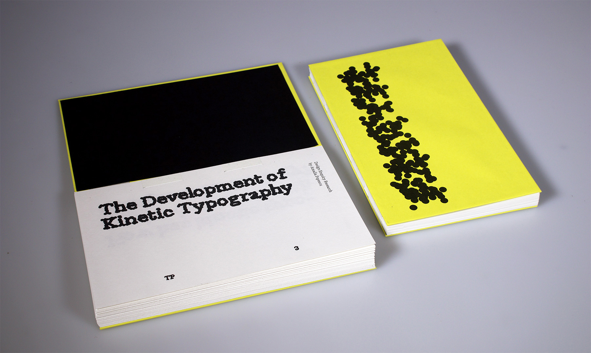
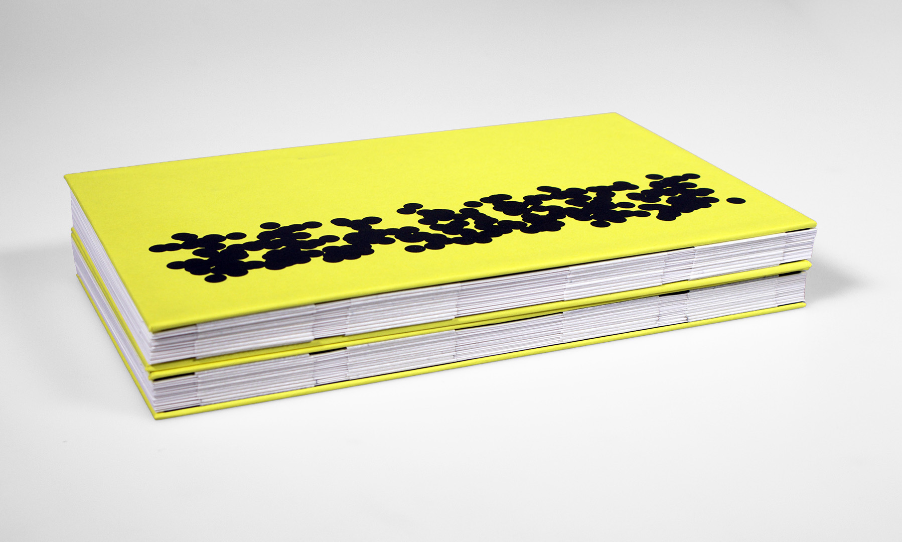
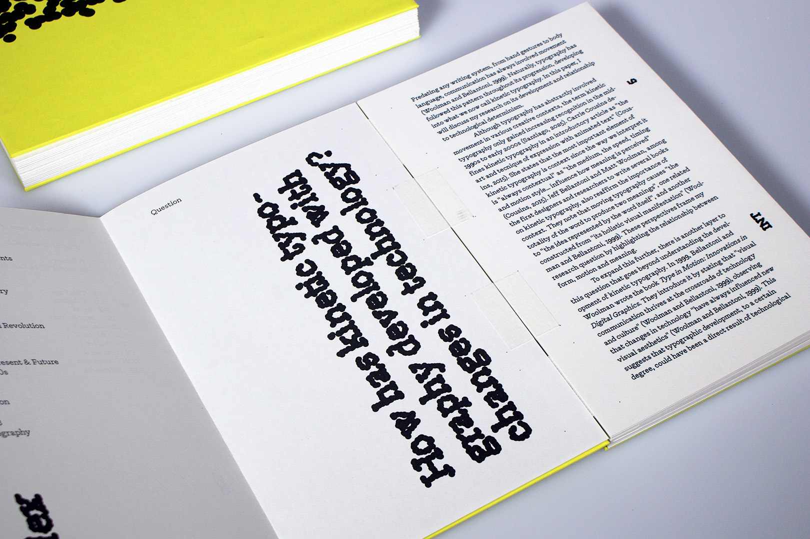
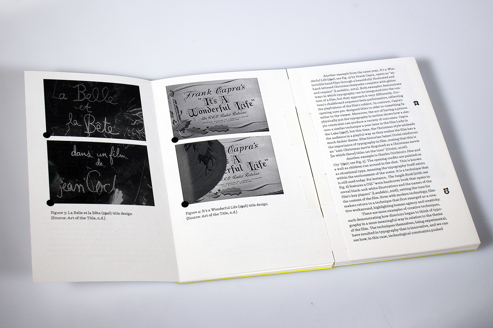
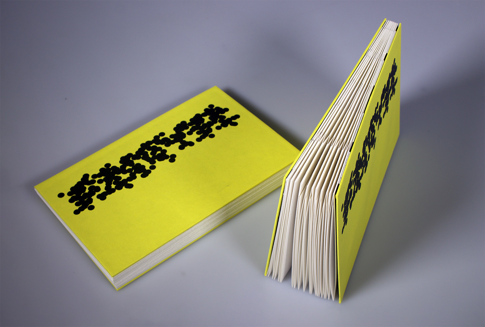

Amalia Popescu
About





The Development of Kinetic Typography
(Research Project)
This 7000-word publication explores the development of kinetic typography from the 1800s to the present day. Through critical research, I examined how technological innovation has shaped the evolution of the discipline. The project was designed and produced as a book, with its format inspired by film strips, reflecting the origins of much of the research. The format, binding, and typographic choices are all influenced by this visual and historical reference.
next project >